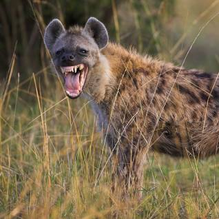

Hyena

Hyenas are carnivorous mammals known for their scavenging behaviors, distinctive calls, and unique social structure.
Physical Characteristics
- Size: Hyenas vary in size, with some species being smaller and others larger. They can weigh between 70 to 190 pounds.
- Build: They have a robust build with strong jaws and teeth designed for crushing bones.
- Front Legs: Hyenas have longer front legs than hind legs, which gives them a distinctive sloping back appearance.
Behavior and Habitat
- Habitat: Hyenas are found in various habitats across Africa and parts of Asia, including grasslands, savannas, and woodlands.
- Social Structure: They live in complex social groups called clans, which are often dominated by females. They exhibit cooperative hunting and scavenging behaviors.
- Nocturnal: Hyenas are primarily nocturnal, being more active during the night for hunting and social activities.
Diet
Hyenas are carnivores and have a diet that includes a wide range of prey, such as antelope, wildebeest, and even carrion.
Conservation Status
Many hyena populations are stable, but they face some threats from habitat loss, human-wildlife conflict, and retaliatory killings.
Interesting Facts
- Laughing Call: Hyenas are known for their distinctive vocalizations, including the "laughing" call, which can be heard from a distance.
- Scavenging Role: While hyenas are skilled hunters, they also play a vital role in ecosystems by scavenging and cleaning up carcasses.
- Hyena Species: There are four species of hyenas: spotted hyena, brown hyena, striped hyena, and aardwolf.